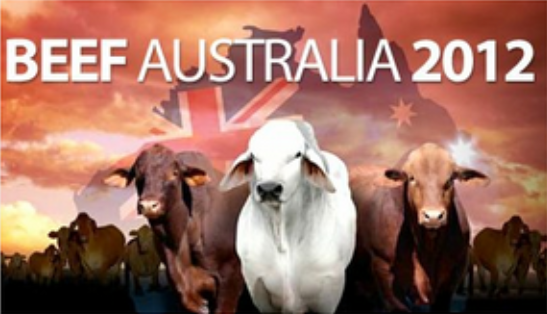

- O que a precuária australiana tem del melhor que a brasileira?
- O que se prefereproduzir na Austrália: carne a pasto ou boi confinado?
Acesse grátis aqui!
Para assistir, pedimos em troca um Tweet ou post no Facebook
Escolha uma rede, clique no botäo correspondente e confirme a postagem para ser refirecionado para a página de download (vocè poderá ver o texto antes de confirmar)